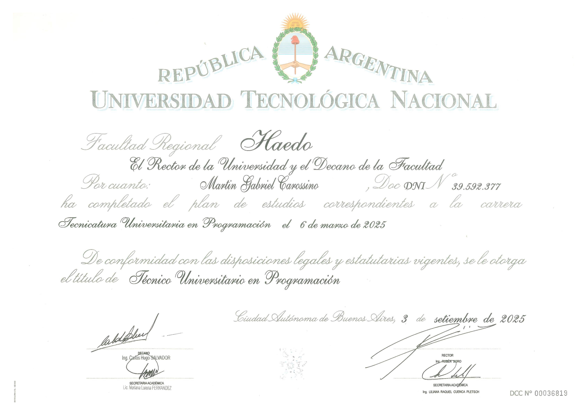
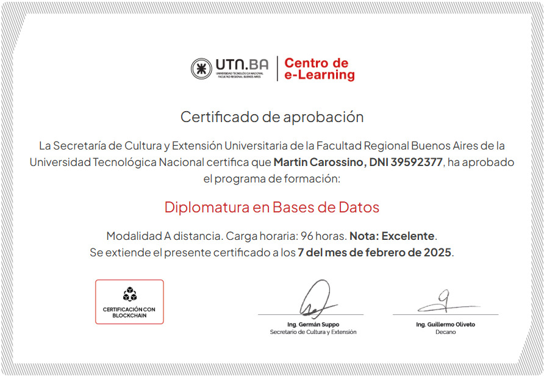
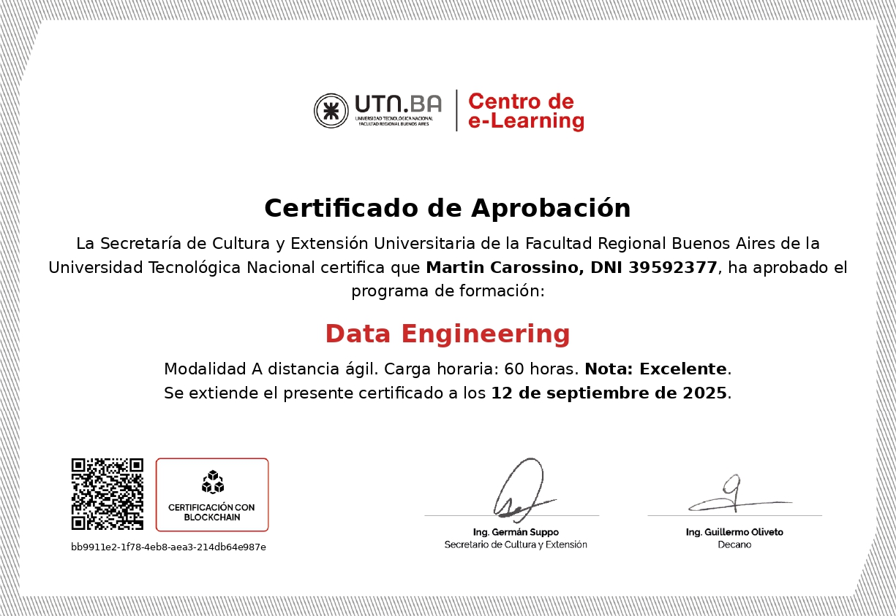
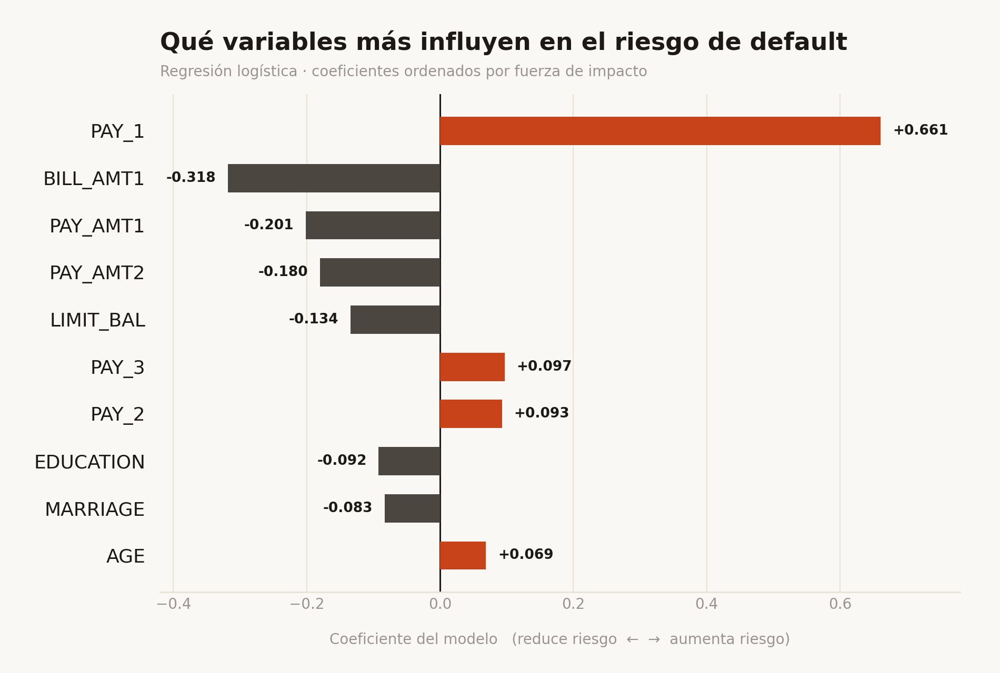
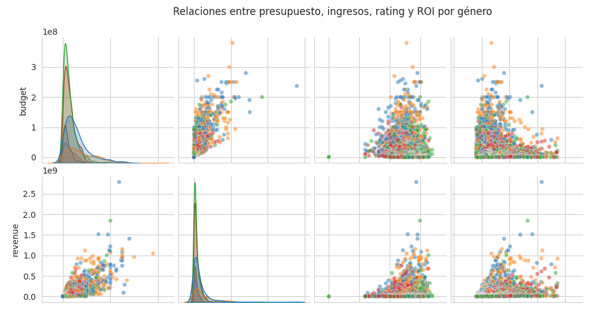
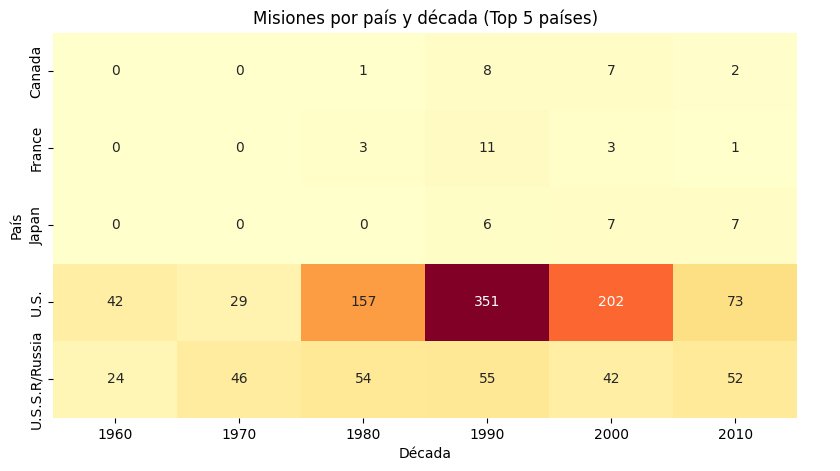
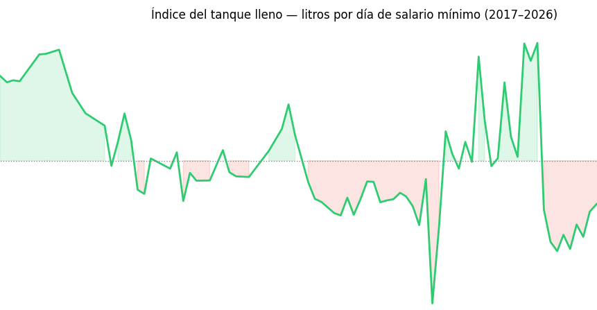
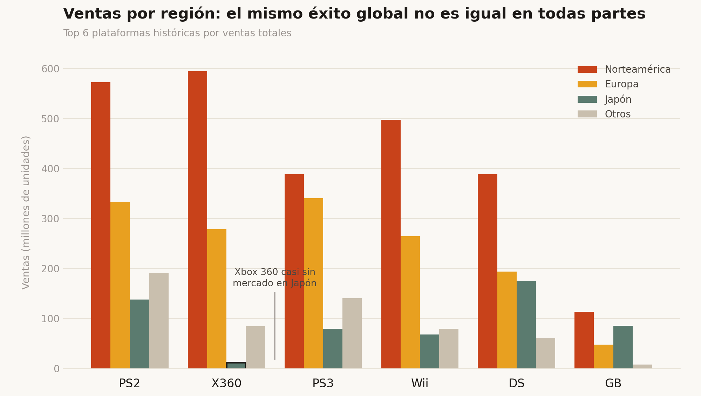

Martín
Carossino
Me interesa el punto donde el código y los datos se encuentran: construir sistemas que no solo funcionen, sino que cuenten algo.
Del dato crudo
a la decisión
Soy Backend Developer & Data Analyst de Buenos Aires. Trabajo en Bianchi Service desde octubre de 2024, un laboratorio de calibración y metrología, donde desarrollo y mantengo el sistema: una plataforma interna que cubre el flujo operativo completo del laboratorio — ingreso de equipos, presupuestos, órdenes de trabajo, remitos y facturación.
Actualmente profundizo en Power BI, DAX y Python, combinando mi experiencia en desarrollo backend y bases de datos con un enfoque cada vez más orientado a Data Analytics.
Formación académica



Lo que construí
Modelo de regresión logística para predecir default en clientes de tarjetas de crédito, sobre el dataset público de UCI (30.000 clientes). Más allá del accuracy: análisis de precision/recall, ajuste de umbral de decisión, e interpretación de coeficientes con sus límites por multicolinealidad.

Cruce real de dos fuentes (datos financieros y reparto/equipo) sobre 4.800+ películas, con el mismo join verificado en pandas y en SQL puro vía SQLAlchemy. El ROI promedio por género resulta engañoso por outliers extremos — la mediana cuenta una historia muy distinta sobre qué géneros realmente rinden mejor.

EDA sobre 1.277 misiones espaciales (1961–2019): una distribución bimodal en la duración de las misiones, explicada por completo al separar vuelos orbitales cortos de estadías en estación espacial. Un test de chi-cuadrado descarta una asociación aparente entre perfil militar/civil y tipo de misión, y el fin del programa de transbordadores de EE.UU. (2011) queda documentado con claridad en los propios datos.

¿Cuánto vale un día de trabajo en nafta? Análisis del poder adquisitivo real en Argentina (2017–2026) cruzando datos de Secretaría de Energía, INDEC, SMVM y BCRA. El precio nominal se multiplicó por 83 — pero en términos reales, la nafta es un 18.8% más barata que hace nueve años.

EDA sobre 16.000+ títulos (1980–2016): qué géneros y plataformas dominaron, por qué Xbox 360 nunca conquistó Japón mientras Nintendo sí, y cómo una estrategia de catálogo chico pero exitoso supera al volumen puro. Limpieza de nulos, agregaciones con groupby/agg y visualización en escala logarítmica.

Dashboard analítico para una chocolatera ficticia con toda la lógica resuelta en SQL: self-JOINs acumulados, análisis de Pareto y KPIs en tiempo real vía AJAX. 3 de 12 proveedores concentran el 80% del volumen — detectado directamente en la consulta, sin postprocesamiento.
Plataforma interna de gestión para un laboratorio de metrología y calibración. Incluye órdenes de trabajo, remitos, facturación y módulo de usuarios con control de permisos granular. El sitio web institucional del cliente también fue desarrollado por mí con HTML, CSS y Bootstrap.
El sistema es de uso interno y acceso privado. El enlace dirige al sitio web institucional.
que necesita
análisis?
Estoy disponible para roles en Data Analytics, posiciones de Backend con foco en datos, o proyectos donde SQL y visualización sean protagonistas.